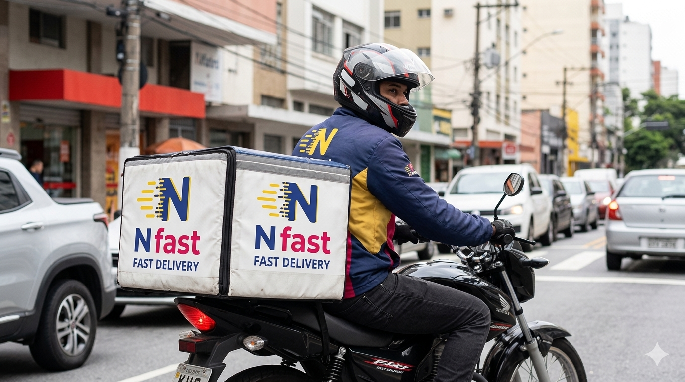
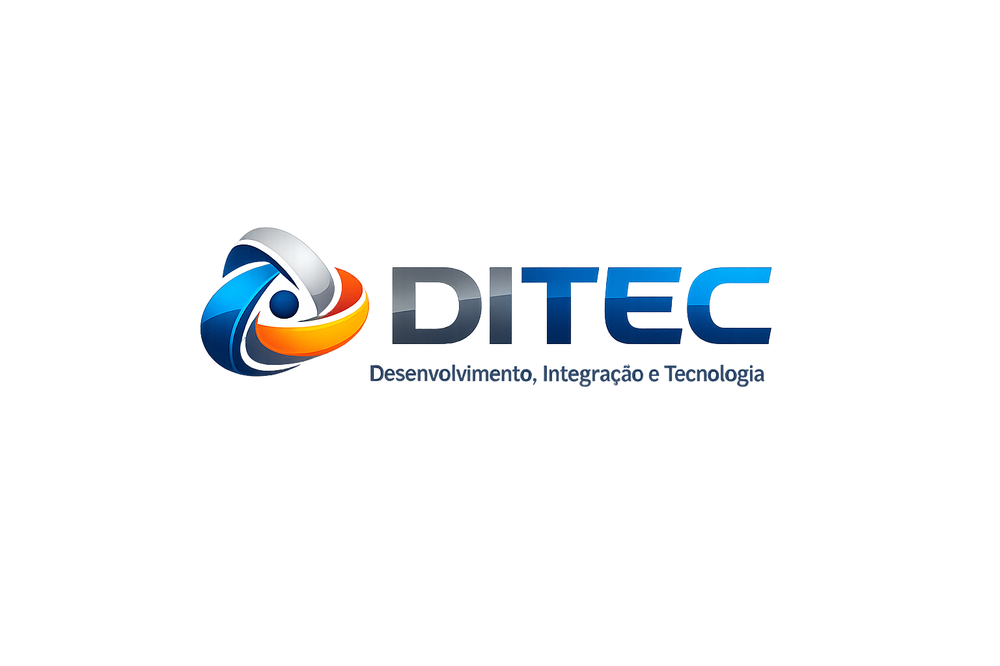
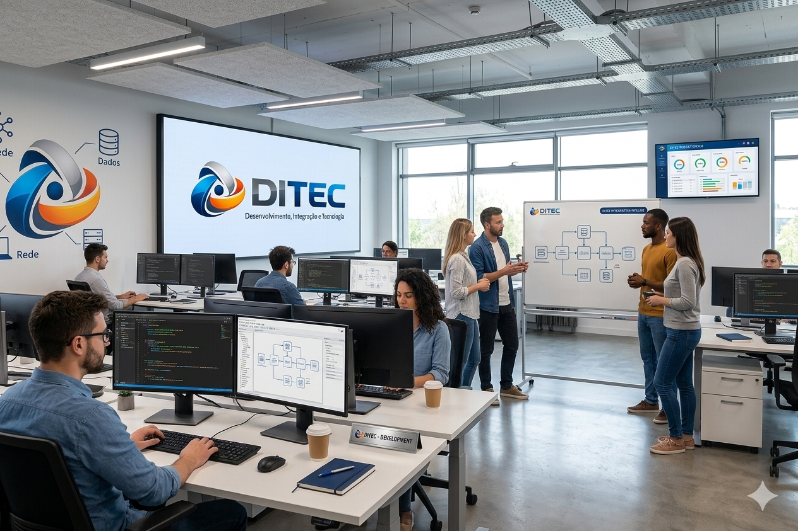

Sistema de Gestão de Entregas
Plataforma completa para gestão de entregas, incluindo pedidos, stock, cotação diaria e pagamentos.
Ver detalhes →
A DITEC (Desenvolvimento, Integração e Tecnologia) é uma equipa multidisciplinar dedicada à criação de soluções tecnológicas inovadoras e eficientes.
Trabalhamos com compromisso, qualidade e inovação para transformar desafios em oportunidades e impulsionar o crescimento dos nossos clientes.

Desenvolver soluções tecnológicas que contribuam para a transformação digital e crescimento das organizações.
Ser referência em desenvolvimento e integração tecnológica, reconhecida pela qualidade, confiança e resultados.
Criação de sistemas web e aplicações personalizadas para diferentes necessidades.
Integramos plataformas, sistemas e processos para otimizar a sua operação.
Implementação e suporte de ambientes tecnológicos seguros e eficientes.
Análise, planeamento e orientação para soluções digitais eficientes.
Aplicamos boas práticas e tecnologias para proteger os seus dados e sistemas.

Plataforma completa para gestão de entregas, incluindo pedidos, stock, cotação diaria e pagamentos.
Ver detalhes →Solução integrada para gestão, monitoramento e centralização de apostas e acompanhamento de Jogos de Ruas.
Ver detalhes →Plataforma digital para conexão, logística e cooperação entre empresas e parceiros internacionais.
Ver detalhes →Novos projetos inovadores e soluções disruptivas estão a caminho. Fique atento às novidades!
Ver detalhes →+244 936 123 456
contacto@ditec.co.ao
Zango, Viana - Luanda, Angola
Segunda - Sexta: 08h - 17h